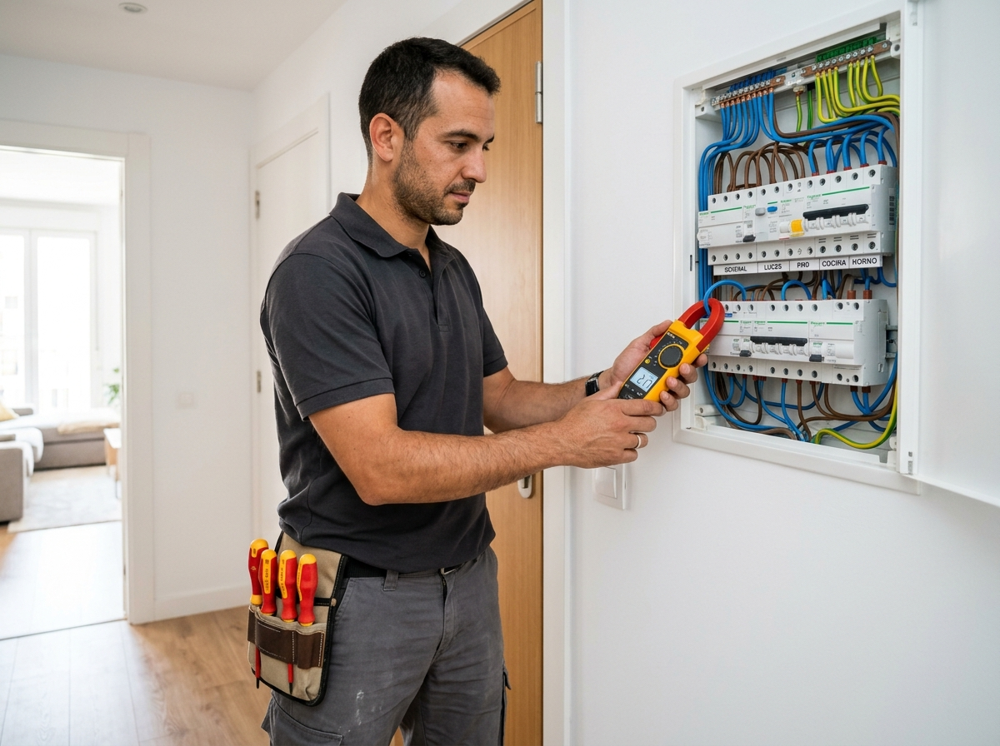
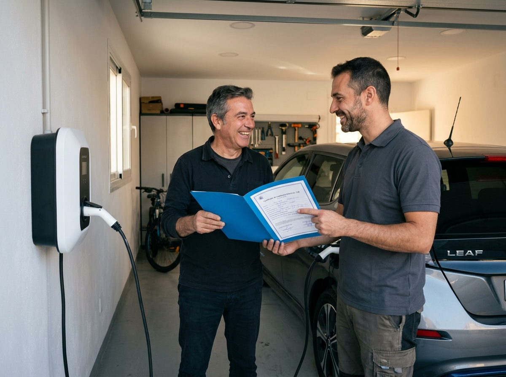
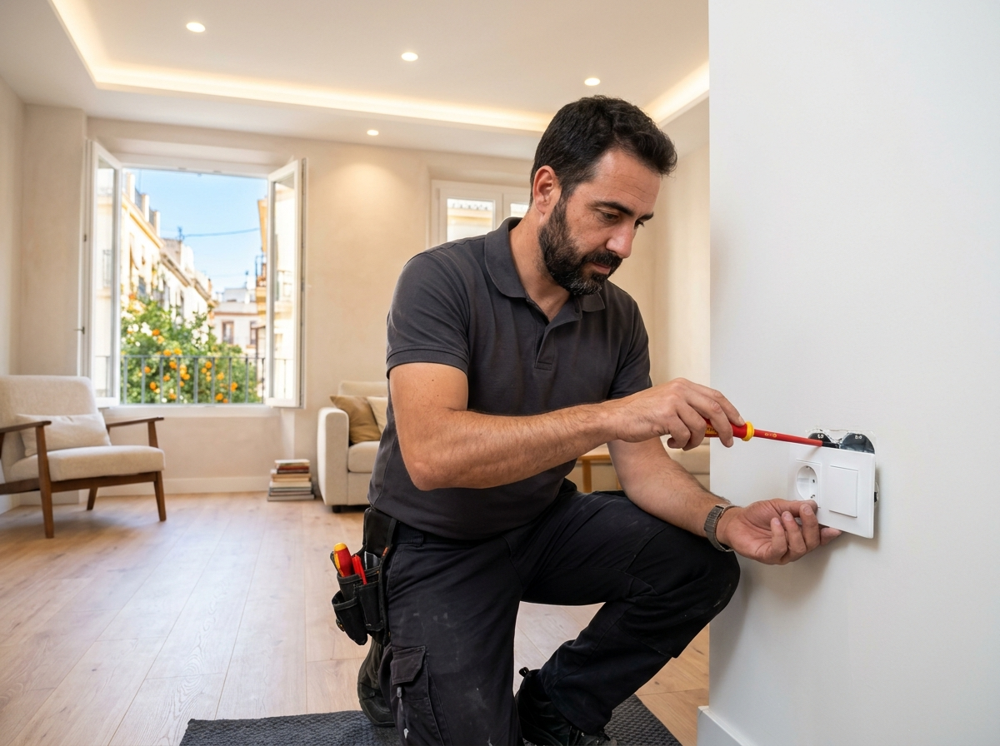
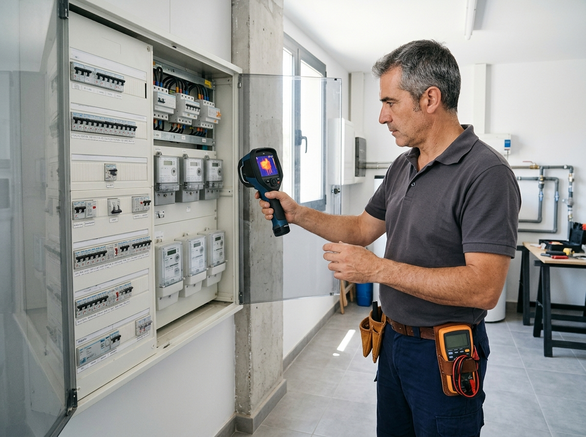

Servicios Eléctricos Profesionales en Valencia
Averías y Apagones 24h
Localización de cortocircuitos, derivaciones a tierra, saltos de diferencial (ICP/IGA) y restablecimiento urgente de suministro eléctrico.
Cuadros Eléctricos y Protecciones
Renovación y montaje de cuadros eléctricos, magnetotérmicos, diferenciales rearmables y protectores contra sobretensiones.
Boletines Eléctricos (CIE)
Emisión de Certificados de Instalación Eléctrica (Boletines de Luz), aumentos de potencia y altas de suministro en viviendas y locales.
Iluminación LED y Enchufes
Instalación y reparación de enchufes, interruptores, iluminación LED interior/exterior, detectores de presencia y alumbrado de emergencia.
Cargadores de Coche Eléctrico
Instalación homologada de puntos de recarga para vehículos eléctricos en garajes comunitarios y viviendas unifamiliares.
Porteros y Videoporteros
Reparación y sustitución de porteros automáticos, videoporteros, timbres y acometidas comunitarias en Valencia.
Galería de Trabajos Realizados en Valencia



